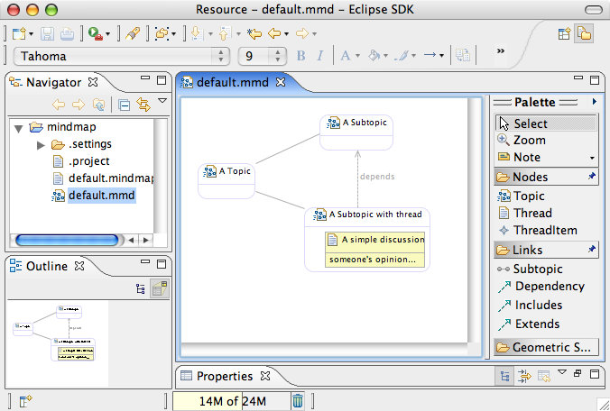
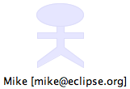
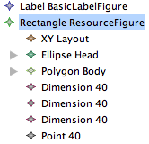
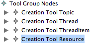
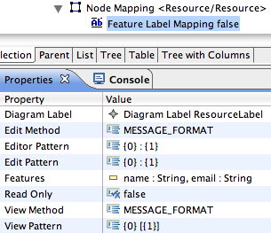
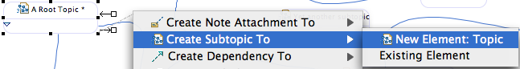
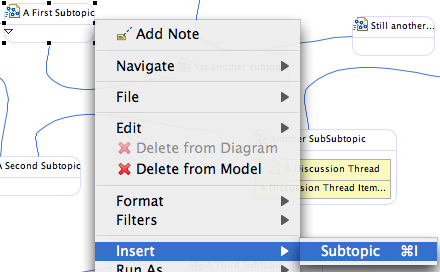
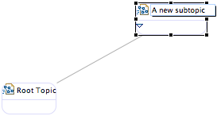

In this third part of the GMF Tutorial, we will explore some more advanced capabilities related to the tooling components, while also extending what's generated with customizations to the runtime. Specifically we will add a composite figure using the graphical definition, show how to leverage external figures, and how to use an extension plug-in to add a custom action to our diagram. The complete solution to this tutorial is maintained in CVS here. Viewlets will be available after appropriate sections below to focus their content and keep them short.
A quick way to get a polished look for our mindmap diagram is by replacing the generated EMF icons we've seen so far with some that are more, well... distinctive ;-) The easiest way to do this is to replace the GIF images found in our org.eclipse.gmf.examples.mindmap.edit/icons/ folder.
In case you'd like to map another image file to a palette item, say in the case of our three Relationship tools, or for our Subtopic link which has no default icon, you can modify the children of your Creation Tool elements in the mindmap.gmftool model. For example, delete the 'Default Image' entry below the 'Creation Tool Subtopic' element that represents the small icon and replace it with a 'Small Icon Bundle Image' and set its Bundle to org.eclipse.gmf.examples.mindmap.edit and its Path property to /icons/full/obj16/Subtopic.gif. Regenerate and the palette will display the new icon. Of course, you'll need to provide this file or use the one found in the solution to this tutorial section.
Finally, take a look in the mindmap.gmfgen for properties to set for the default wizard and diagram file icons. While you're there, you might want to change the diagram file extension from 'mindmap_diagram' to 'mmd' or something similar. Browsing the properties available in the gmfgen model is a useful exercise.
Below is an image of our diagram and palette using some new images.


What we'd like to do is have an actor-style representation for our resources added to our diagram. These will be linked to their respective Topic elements, much like our relationship links between Topic elements. Also, we'd like to have the labels for our Resource figures external and display both the name and email address attribute values of the corresponding domain element.

Open up your graphical definition again and add a new Figure Descriptor and Rectangle named 'ResourceFigure' to your Figure Gallery. Set its Outline property to false, along with its Fill. As you can see from the image to the right, we will be adding a series of children to the rectangle, which will act as a container for the elements that comprise our Resource figure. Specifically, right-click and add an XY Layout, and Ellipse for the head, a Polygon for the Body, and sizing elements. Rather than go through all of the gory details of these, the figure code is found below. Either paste it into your mindmap.gmfgraph in the appropriate location using a text editor, or utilize the default editor and properties view.
To our Canvas, add a new Node named Resource and assign our ResourceFigure as its Figure. Also, notice the new 'BasicLabelFigure' label that is added to the Figure Gallery in the image. Create this and add a new Diagram Label 'ResourceLabel' to the Figure Gallery and Canvas respectively. Note that the Label for our Resource is not a child element of its figure. We want the label to be external, and therefore be allowed to float and be positioned wherever the user would like it.
<descriptors
name="ResourceFigure">
<actualFigure
xsi:type="gmfgraph:Rectangle"
name="ResourceFigure"
outline="false"
fill="false">
<layout
xsi:type="gmfgraph:StackLayout"/>
<children
xsi:type="gmfgraph:Rectangle"
name="Resource"
outline="false"
fill="false">
<layout
xsi:type="gmfgraph:FlowLayout"
vertical="true"
forceSingleLine="true"
minorAlignment="CENTER"
majorSpacing="0"
minorSpacing="0"/>
<children
xsi:type="gmfgraph:Ellipse"
name="Head">
<foregroundColor
xsi:type="gmfgraph:RGBColor"
red="220"
green="220"
blue="250"/>
<backgroundColor
xsi:type="gmfgraph:RGBColor"
red="230"
green="230"
blue="255"/>
<size
x="40"
y="20"/>
</children>
<children
xsi:type="gmfgraph:Polygon"
name="Body">
<foregroundColor
xsi:type="gmfgraph:RGBColor"
red="220"
green="220"
blue="250"/>
<backgroundColor
xsi:type="gmfgraph:RGBColor"
red="230"
green="230"
blue="255"/>
<template
x="23"
y="19"/>
<template
x="23"
y="24"/>
<template
x="39"
y="24"/>
<template
x="39"
y="29"/>
<template
x="23"
y="29"/>
<template
x="23"
y="36"/>
<template
x="39"
y="48"/>
<template
x="39"
y="53"/>
<template
x="20"
y="42"/>
<template
x="1"
y="53"/>
<template
x="1"
y="48"/>
<template
x="17"
y="36"/>
<template
x="17"
y="29"/>
<template
x="1"
y="29"/>
<template
x="1"
y="24"/>
<template
x="17"
y="24"/>
<template
x="17"
y="19"/>
<template
x="23"
y="19"/>
</children>
</children>
</actualFigure>
</descriptors>
Tip : It's a bit tedious to add multiple template points in the manner above, so feel free to open the gmfgraph file in a text editor to make life easier. To get it looking right more quickly, open the generated figure class and simply modify the GEF code directly and run the editor to see how it looks. Then, move this information back into your gmfgraph model. Of course, when the WYSIWYG features of GMF become more mature, none of this should be necessary.

We'll need a tool to add Resource nodes, so as you've done many times before, open the mindmap.gmftool model and add a new node creation tool for the Resource. Next, we'll need to add our mappings, so reopen your mindmap.gmfmap file.

First, we'll need to add a new Top Node Reference to our Mapping definition. Set the Containment Feature to our 'resources : Resource' attribute of our Map class. Add a child Node Mapping element to this Top Node Reference and select our 'Resource' for the Domain meta information Element property. Of course, we'll select our Resource node for the Diagram Node and our Resource creation tool for the palette.
Now, to add our Feature Label Mapping as a child of the Node Mapping and set the Edit and View Pattern and corresponding features from our Resource class in the domain model. Here, we'll utilize the edit and view pattern properties of the mapping model to allow a Resource label to be displayed as 'name [email@some.com]'. To allow for the proper parsing of what's entered into the direct edit field, we will define an edit and editor pattern for the label as '{0} : {1}' where a colon is used to separate the name and email attributes. The view pattern will be '{0} [{1}]' and allow our label to be displayed as shown in the image. Note that the generated plug-in code will contribute to the parserProvider extension-point, which will in turn leverages the Java MessageFormat class.
After generation, a slight tweak will need to be made to the generated figure until bug 142010 is resolved. In the generated org.eclipse.gmf.examples.mindmap.diagram.edit.parts.ResourceEditPart$ResourceFigure class, set the attribute private boolean myUseLocalCoordinates = true; You might want to set the comment above it to @generated NOT in order to preserve this change. Without doing this the polygon used for the figure's body will not be visible. With that, set the fill(true) method on the body in the generated figure code, as it seems otherwise to not be filled.
Run the diagram and check the operation of the label, as well as the look of the figure. It should look similar to the one above. Resources added to the diagram are now available in the properties view for topic assignments, thread authoring, etc. To add the ability to create links from other elements to a Resource, follow steps similar to how links are used to represent subtopics. This exercise is left to the reader ;-)
Although making modifications to the generated code and specifying '@generated NOT' to allow JMerge to preserve our changes works well for some customizations, it's also possible to separate other customizations (extensions) to our generated plug-in using a new plug-in. For this purpose, create a new plug-in project named org.eclipse.gmf.examples.mindmap.diagram.custom to your workspace. Use the default settings, although no Activator class is needed, nor is the use of any of the templates provided in the wizard.

The standard means to create a new subtopic is a bit painful at the moment: click on Topic creation tool, then diagram, name with in-place editor, click Subtopic link creation tool, draw link from parent to subtopic. Ideally, we'd like to simply use a right-click menu option on a selected Topic and choose "Create Subtopic" or better yet, press the Insert key (or some combination) and have the new Topic created, including the link, and with the in-place editor active on the new Topic. In this section, we will explore how to accomplish just this.
To begin, we know that the org.eclipse.ui.bindings can be used to assign a Ctrl+I key combination to our action (as seen on the image, though for OS X). This is easily accomplished by contributing to the extension-point in our new *.diagram.custom plugin.xml file. Note that this is a simplistic example that does not declare a context, as you would probably expect to create for your diagram and potentially extend a default GMF diagram context (if one existed ;-).
<extension point="org.eclipse.ui.bindings"> <key commandId="org.eclipse.gmf.examples.mindmap.insertSubtopic" sequence="M1+I" schemeId="org.eclipse.ui.defaultAcceleratorConfiguration"/> </extension>
Now, for the command, we'll contribute to the org.eclipse.ui.commands extension-point, as seen below. When you run your diagram, you will see this command category and the shortcut listed in the General | Keys preference page.
<extension point="org.eclipse.ui.commands"> <category name="Mindmap" description="Commands related to Mindmap diagrams." id="org.eclipse.gmf.category.mindmap"/> <command categoryId="org.eclipse.gmf.category.mindmap" description="Inserts a new subtopic" id="org.eclipse.gmf.examples.mindmap.insertSubtopic" name="Insert Subtopic"> </command> </extension>Now, for the popup menu. We'd like to have a series of potential menu items to insert elements on our diagram (i.e. subtopics, threads, etc.), so our contribution to org.eclipse.ui.popupMenus will define an 'Insert | Subtopic' menu and link it to our binding above through the defintionId:
<extension point="org.eclipse.ui.bindings"> <key commandId="org.eclipse.gmf.examples.mindmap.insertSubtopic" sequence="M1+I" schemeId="org.eclipse.ui.defaultAcceleratorConfiguration"/> </extension>
Now, for the command, we'll contribute to the org.eclipse.ui.commands extension-point, as seen below. When you run your diagram, you will see this command category and the shortcut listed in the General | Keys preference page.
<extension point="org.eclipse.ui.commands"> <category name="Mindmap" description="Commands related to Mindmap diagrams." id="org.eclipse.gmf.category.mindmap"/> <command categoryId="org.eclipse.gmf.category.mindmap" description="Inserts a new subtopic" id="org.eclipse.gmf.examples.mindmap.insertSubtopic" name="Insert Subtopic"> </command> </extension>
Now, for the popup menu. We'd like to have a series of potential menu items to insert elements on our diagram (i.e. subtopics, threads, etc.), so our contribution to org.eclipse.ui.popupMenus will define an 'Insert | Subtopic' menu and link it to our binding above through the defintionId:
<extension point="org.eclipse.ui.popupMenus">
<objectContribution
adaptable="false"
id="org.eclipse.gmf.examples.mindmap.diagram.ui.objectContribution.TopicEditPart1"
objectClass="org.eclipse.gmf.examples.mindmap.diagram.edit.parts.TopicEditPart">
<menu
id="MindmapInsert"
label="&Insert"
path="additions">
<separator name="group1"/>
</menu>
<action
class="org.eclipse.gmf.examples.mindmap.diagram.part.MindmapCreateSubtopicAction"
definitionId="org.eclipse.gmf.examples.mindmap.insertSubtopic"
enablesFor="1"
id="org.eclipse.gmf.examples.mindmap.popup.MindmapCreateSubtopicActionID"
label="&Subtopic"
menubarPath="MindmapInsert/group1">
</action>
</objectContribution>
</extension>
Now, for the fun part... to define the declared MindmapCreateSubtopicAction class. To begin, we know that similar functionality exists in the connection handles feature provided by the runtime (see image below).

After some investigation, it seems the CreateViewAndOptionallyElementCommand class gives us a hint at how to implement what we want (thanks to Cherie for providing a simplied version of the original tutorial code below, which leverages the DeferredCreateConnectionViewAndElementCommand).
public void run(IAction action) {
CompoundCommand cc = new CompoundCommand("Create Subtopic and Link");
// Create the new topic for the other end.
CreateViewRequest topicRequest = CreateViewRequestFactory.getCreateShapeRequest(MindmapElementTypes.Topic_2001, selectedElement.getDiagramPreferencesHint());
Point p = selectedElement.getFigure().getBounds().getTopRight().getCopy();
selectedElement.getFigure().translateToAbsolute(p);
int edgeCount = selectedElement.getNotationView().getSourceEdges().size();
// A quick hack to get subtopics to layout to the right, from top to bottom
int offset = (edgeCount * 50) – 100;
topicRequest.setLocation(p.translate(100, offset));
MapEditPart mapEditPart = (MapEditPart) selectedElement.getParent();
Command createTopicCmd = mapEditPart.getCommand(topicRequest);
IAdaptable topicViewAdapter = (IAdaptable) ((List) topicRequest.getNewObject()).get(0);
cc.add(createTopicCmd);
// create the subtopics link command
ICommand createSubTopicsCmd = new DeferredCreateConnectionViewAndElementCommand(new CreateConnectionViewAndElementRequest(MindmapElementTypes.TopicSubtopics_4001,
((IHintedType) MindmapElementTypes.TopicSubtopics_4001).getSemanticHint(), selectedElement.getDiagramPreferencesHint()), new EObjectAdapter((EObject) selectedElement.getModel()),
topicViewAdapter, selectedElement.getViewer());
cc.add(new ICommandProxy(createSubTopicsCmd));
selectedElement.getDiagramEditDomain().getDiagramCommandStack().execute(cc);
// put the new topic in edit mode
final EditPartViewer viewer = selectedElement.getViewer();
final EditPart elementPart = (EditPart) viewer.getEditPartRegistry().get(topicViewAdapter.getAdapter(View.class));
if (elementPart != null) {
Display.getCurrent().asyncExec(new Runnable() {
public void run() {
viewer.setSelection(new StructuredSelection(elementPart));
Request der = new Request(RequestConstants.REQ_DIRECT_EDIT);
elementPart.performRequest(der);
}
});
}
}
Rather than type in the code, simply copy the MindmapCreateSubtopicAction class into your project from the solution in CVS. If you observe any Access Restriction errors, add the required packages to the Exported Packages list on the Runtime of the *.diagram plugin. The basic concepts are outlined next.
Our action will implement IObjectActionDelegate, with its run method performing the following:

Run the diagram and test the functionality using the keyboard combination (Ctrl+I) or right-click menu. Note that the subtopic is created above and to the right of the parent with direct editing enabled for you to give it a name. As you can see, the code to determine the position is a temporary hack (layout will be covered in another installment of the tutorial).
Clearly, the default layout provided is not appropriate for a mindmap. What we are about to add is also less than optimal, but will indicate what is necessary to add a custom layout to your diagram. As described in the Layout Service Example, we will contribute an extension to the runtime's layoutProviders extension-point.
We'll try two layouts: one that extends org.eclipse.gmf.runtime.diagram.ui.providers.LeftRightProvider; the other, extending org.eclipse.gmf.runtime.diagram.ui.providers.internal.RadialProvider (To access these class you need to include org.eclipse.gmf.runtime.diagram.ui.providers in your project dependancies). For each, add the appropriate extension in your plugin.xml file, setting the Priority higher for the one you'd like to take precedence. For example:
<extension point="org.eclipse.gmf.runtime.diagram.ui.layoutProviders">
<layoutProvider class="org.eclipse.gmf.examples.mindmap.diagram.layout.MindmapDefaultLayoutProvider">
<Priority name="Medium"/>
</layoutProvider>
</extension>
The code for the LeftRightProvider is below:
public class MindmapDefaultLayoutProvider
extends LeftRightProvider {
public static String DEFAULT_LAYOUT = "Default";
public boolean provides(IOperation operation) {
// enable this provider only on mindmap diagrams
if (operation instanceof ILayoutNodeOperation) {
Iterator nodes = ((ILayoutNodeOperation) operation)
.getLayoutNodes().listIterator();
if (nodes.hasNext()) {
View node = ((ILayoutNode) nodes.next()).getNode();
Diagram container = node.getDiagram();
if (container == null
|| !(container.getType().equals("Mindmap"))) //$NON-NLS-1$
return false;
}
} else {
return false;
}
IAdaptable layoutHint = ((ILayoutNodeOperation) operation)
.getLayoutHint();
String layoutType = (String) layoutHint.getAdapter(String.class);
return LayoutType.DEFAULT.equals(layoutType);
}
}
If you run the diagram using both providers, it's clear that the left-right layout is more well-suited for a mindmap, although some adjustments would be necessary to make it more usable.
Let's say you don't want to see the Notes stack and Zoom tool on your palette. To remove them, you need to contribute to the paletteProvider extension-point using the predefinedEntry IDs and remove="true" attribute. For these contributions to not impact all editors, add an editor element with your diagram's ID to the paletteProvider, as seen below:
<extension point="org.eclipse.gmf.runtime.diagram.ui.paletteProviders">
<paletteProvider class="org.eclipse.gmf.runtime.diagram.ui.providers.DefaultPaletteProvider">
<Priority name="High"/>
<contribution>
<predefinedEntry id="standardGroup/zoomTool" remove="true"/>
<predefinedEntry id="standardGroup/noteStack/noteTool" remove="true"/>
<predefinedEntry id="standardGroup/noteStack/textTool" remove="true"/>
<predefinedEntry id="standardGroup/noteStack/noteattachmentTool" remove="true"/>
</contribution>
<editor
id="org.eclipse.gmf.examples.mindmap.diagram.part.MindmapDiagramEditorID">
</editor>
</paletteProvider>
</extension>
This contribution is added to the org.eclipse.gmf.examples.mindmap.custom plugin.xml file in CVS.
In this section of the tutorial, we saw how to add a composite figure, create a custom action and layout provider contained within a new extension plug-in. In the next section, we will look at using the dashboard, and generating an RCP-based mindmap with the "lite" runtime: GMF Tutorial Part 4